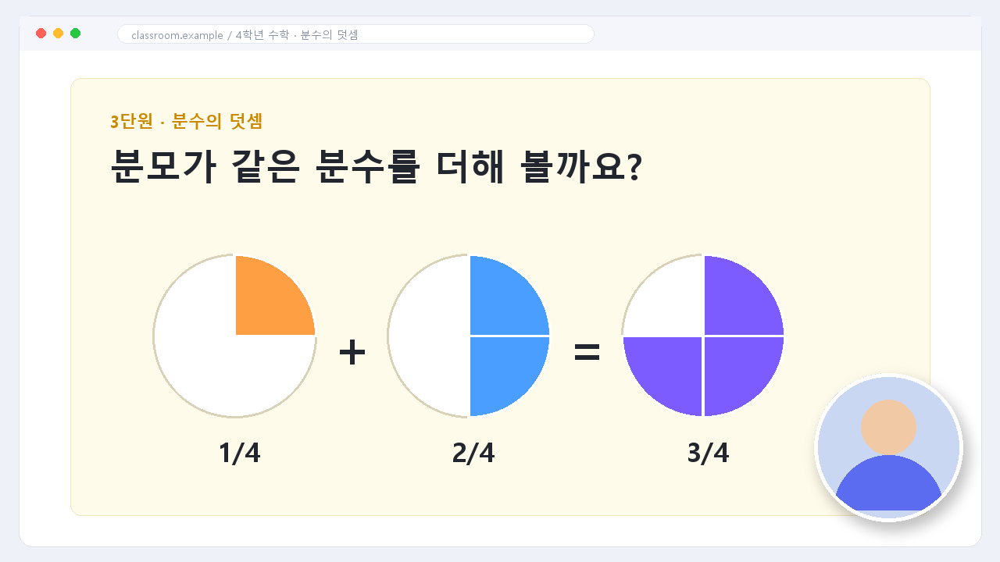
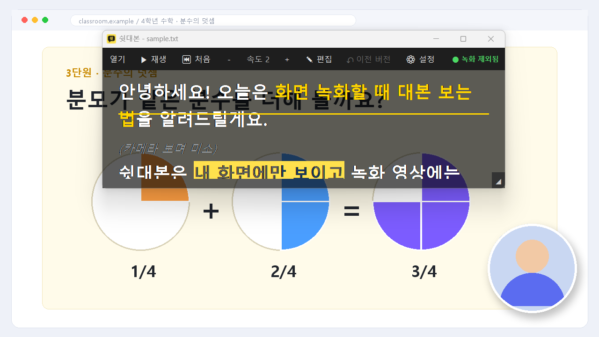
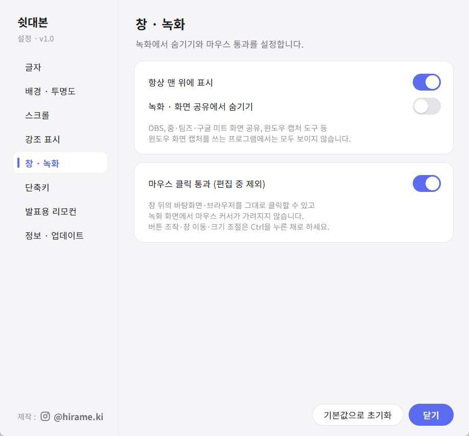
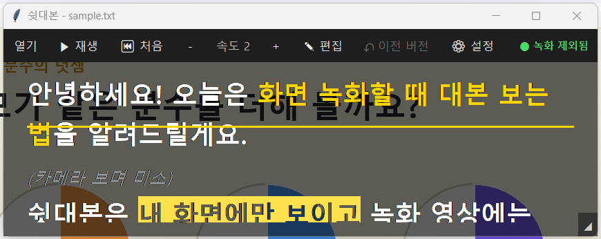
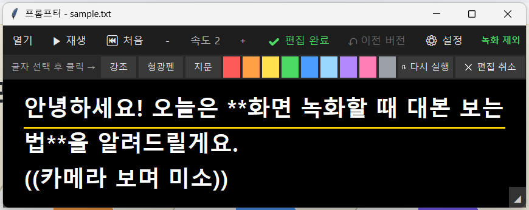
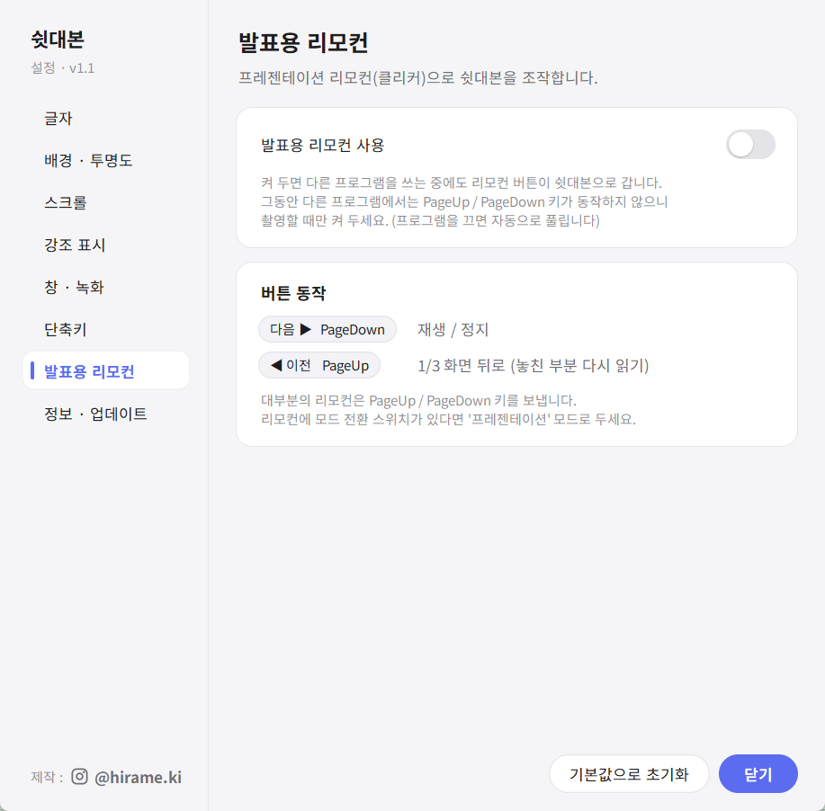
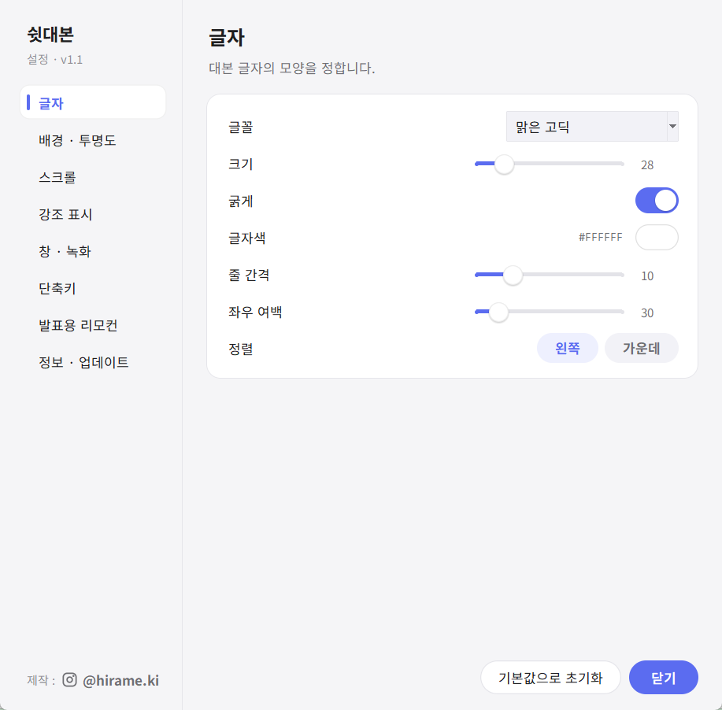

대본 보면서 찍어도
녹화엔 안 보여요
내 화면에만 보이는 투명 대본 창. 녹화·화면 공유에서는 자동으로 사라지고, 마우스는 창 뒤로 그대로 클릭돼요.


← 가운데 손잡이를 밀어서 비교해 보세요 →
대본이 막막하면,
틀부터 고르세요
유튜브 강의 · 원격 수업 · 발표 · 쇼츠 틀을 고르고 빈칸만 채우면 대본 완성. 강조는 버튼으로, 길이는 미리 재 보고, txt로 받아 쉿대본에서 바로 열어요.
대본 만들기 열기촬영할 때 필요한 것만, 딱.
카메라를 보면서 자연스럽게 말하고, 대본은 나만 봐요. 복잡한 설정 없이 대본 파일 하나면 끝.

녹화 · 화면 공유에서
자동으로 숨겨져요
Windows의 화면 캡처 제외 기능을 써서, 내 모니터에는 보이지만 녹화 프로그램에는 찍히지 않아요. 켜기만 하면 끝이에요.
- OBS 디스플레이 캡처, 윈도우 캡처 도구, 게임 바 녹화
- 줌 · 팀즈 · 구글 미트 화면 공유
- 실행할 때마다 '숨기기'가 켜진 상태로 시작해요
대본 창 위를 눌러도
뒤의 화면이 클릭돼요
쉿대본은 마우스를 통과시켜요. 대본을 띄운 채로 슬라이드를 넘기고, 브라우저를 클릭하고, 바탕화면 아이콘을 눌러도 돼요. 녹화 영상에서 마우스 커서가 가려지지도 않아요.
- 버튼 조작 · 창 이동은 Ctrl을 누른 채로
- 편집할 때만 자동으로 통과가 꺼져요

**강조**강조==형광펜==형광펜((카메라 보며 미소))(카메라 보며 미소)[하늘]OBS[/]OBS중요한 말은 색으로,
행동은 작은 메모로
메모장에 기호만 붙이면 강조색, 형광펜, 지문(행동 메모), 원하는 색 글자로 바뀌어요. 어디서 힘을 줄지, 언제 웃을지 한눈에 보여요.
- 메모장 Ctrl+B 굵게도 그대로 강조로 인식
- 빨강 · 주황 · 노랑 · 초록 · 파랑 · 하늘 · 보라 · 분홍 · 회색

찍다가 고칠 곳이 보이면
그 자리에서 바로
✎ 편집을 누르면 읽던 줄에 커서가 놓여요. 글자를 고르고 버튼을 누르면 강조 기호가 자동으로 들어가고, 편집 완료와 함께 파일에도 저장돼요.
- 되돌리기 · 다시 실행 · 편집 취소
- 저장 전 버전으로 언제든 되돌리기

발표용 리모컨으로
멀리서도 조작
프레젠테이션 리모컨(클리커)의 '다음' 버튼으로 재생·정지, '이전' 버튼으로 놓친 부분을 다시 읽어요. 카메라 앞에 서서 찍을 때 특히 편해요.
- 다음 ▶ 재생 / 정지 · ◀ 이전 1/3 화면 뒤로
- PageUp / PageDown을 보내는 대부분의 리모컨 지원
속도 20단계 자동 스크롤
아주 느린 낭독부터 빠른 진행까지. 내 말 빠르기에 딱 맞춰요.
읽기 가이드선
지금 읽을 줄을 노란 선으로 표시해서 시선이 흔들리지 않아요.
3초 카운트다운
재생을 누르면 3, 2, 1 후에 시작. 숨 고를 시간을 줘요.
글자 · 배경 투명도
글자색, 배경색, 투명도를 따로 조절. 어떤 화면 위에서도 잘 읽혀요.
어디서나 단축키
다른 창을 쓰는 중에도 Ctrl+Shift+Space로 재생·정지.
새 버전 알림
새 기능이 나오면 프로그램이 알려 줘요. 설정은 그대로 유지돼요.
설정은 밝고, 간단하게
바꾸는 즉시 적용되고 자동으로 저장돼요. 다음에 켜도 그대로예요.

3단계면 바로 촬영
파이썬 같은 걸 따로 설치할 필요 없어요. 받아서 설치하고, 대본만 열면 돼요.
설치하기
받은 파일을 두 번 클릭해서 설치해요. 시작 메뉴에 '쉿대본'이 생겨요.
대본 열고 재생
메모장에 대본을 써서 저장(.txt)하고, 쉿대본의 [열기]로 불러온 뒤 Space를 누르면 스크롤이 시작돼요.
자주 묻는 질문
줌이나 팀즈 화면 공유에서도 정말 안 보이나요?
네. 줌 · 팀즈 · 구글 미트처럼 Windows 화면 캡처를 쓰는 프로그램에서는 대본 창이 보이지 않아요. 처음 한 번은 줌의 녹화 기능으로 직접 확인해 보시길 권해요.
휴대폰이나 카메라로 모니터를 찍으면요?
그건 보여요. 숨기기는 컴퓨터 안에서 화면을 캡처할 때만 동작해요. HDMI 캡처보드로 녹화하는 경우도 마찬가지로 보여요.
백신(V3 등)에서 경고가 떠요.
새로 만든 개인 프로그램은 처음에 백신이 낯설어서 경고할 수 있어요(오진). 다운로드한 파일이 이 페이지의 공식 링크에서 받은 것이 맞다면 '허용'을 눌러 주세요. 오진은 백신 회사에 신고해서 해결하고 있어요.
업데이트는 어떻게 하나요?
프로그램을 켤 때 새 버전이 있는지 자동으로 확인해서, 상단에 '● 새 버전'이 표시돼요. 눌러서 새 설치 파일을 받아 실행하면 덮어써지고, 글자색 · 속도 같은 설정은 그대로 남아요.
맥(Mac)에서도 쓸 수 있나요?
지금은 Windows 10(2004 버전) 이상에서만 쓸 수 있어요.
정말 무료인가요?
네, 무료예요. 써 보시고 좋았다면 인스타그램으로 후기를 들려주세요!
오늘 촬영부터,
대본 걱정은 끝.
카메라만 보고 말하세요. 대본은 나만 볼게요.
무료 다운로드 · Windows